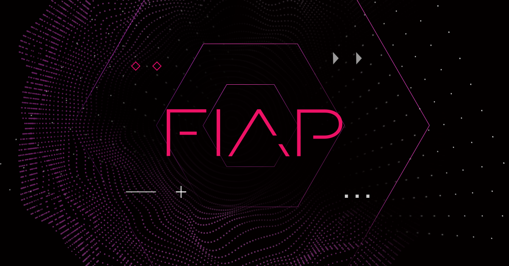

01
Front-end
Interfaces pensadas para pessoas e construídas para a web.
Sou estudante de Engenharia de Software na FIAP e desenvolvedor em formação. Busco uma oportunidade para aplicar meus conhecimentos, aprender com desafios reais e construir soluções úteis com tecnologia.

TECNOLOGIA EM MOVIMENTO
A tecnologia me interessa pelo que torna possível: aproximar pessoas, resolver problemas e abrir espaço para novas ideias.
Na FIAP, desenvolvo minha base em Engenharia de Software enquanto exploro diferentes áreas da programação. Aprendo na prática, colaboro em projetos acadêmicos e encaro cada desafio como uma oportunidade para evoluir.
Minha trajetória ↘Uma base em crescimento, feita de fundamentos, prática e curiosidade.
Interfaces pensadas para pessoas e construídas para a web.
Explorando ferramentas e padrões para criar aplicações.
Lógica e experimentação para resolver problemas.
Colaboração, versionamento e primeiros passos na nuvem.
Ideias acadêmicas e pessoais que ganham forma através do código. Este espaço cresce junto com cada novo projeto.
Landing page para apresentar uma solução de inteligência climática voltada a atividades de construção.
 WEB / INTERFACES IMAGEM ILUSTRATIVA
WEB / INTERFACES IMAGEM ILUSTRATIVAInterfaces e experimentos de desenvolvimento web.
Trabalhos e experiências colaborativas ao longo da graduação.
Experimentos com programação e ideias conectadas ao mundo físico.
Da formação na FIAP às experiências profissionais na DBC: uma trajetória em evolução, conectando aprendizado e prática.
FIAP · graduação
Fundamentos, projetos acadêmicos e aprendizado contínuo.
DBC · Estágio
Experiência profissional em andamento, com oportunidade de aprender, colaborar e desenvolver habilidades no ambiente de trabalho.Adicione experiências relevantes conforme elas acontecerem.
Estou em busca de oportunidades de estágio e de projetos em que eu possa contribuir, aprender e evoluir como desenvolvedor.
E-mail: xhxd28@gmail.com